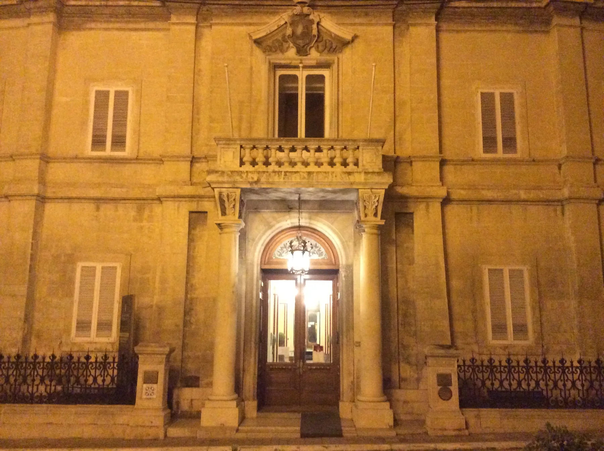

Test the route between the property, Victory Square and your ordinary errands at the hours you would actually use it.
NAXXAR · VILLAGE CORE
Square, stone, daily life.
Read Naxxar from its historic centre outward: Victory Square and Palazzo Parisio first, everyday errands next, then a much larger municipality that needs separate map checks.

NAXXAR EDITIONSTART WITH THE EXACT STREET
A compact centre inside a broad council area.
The Local Council records heritage from the village core to inland and coastal sites. A Naxxar address therefore needs more than a locality label: Victory Square, the residential streets around it and outlying council areas offer different daily patterns.
Operator-verified supermarkets exist in Naxxar, but the useful option depends on the exact entrance and how you travel.
Salina, Maghtab and Bahar ic-Caghaq sit within the council territory but are not presented here as part of one village-centre walk.
Palazzo Parisio.
The council documents the Scicluna family's major alterations between 1898 and 1906. The palace operator confirms the Victory Square address and current uses including visits, gardens, dining and events. Access, prices and opening times should always be checked directly.
Check the current palace information ↗History without a fake trail.
The council records prehistoric remains, Punic graves, catacombs, towers, the Victoria Lines and Il-Widna across the locality. This edition uses that evidence as context; it does not connect scattered sites with a straight line or claim a finished walking route.
Naxxar Local Council heritage ↗OPERATOR-VERIFIED EXAMPLES
Everyday anchors, without a ranking.
These places show the range around Naxxar. They are direct operator examples, not claims that they are the best, closest or suitable for every property.
EUROSPAR
The operator confirms everyday groceries, fresh counters and household essentials at its Naxxar store.
Store information ↗Arkadia
The operator lists a Naxxar foodstore at 17–19 Labour Avenue. Check current services directly.
Store locations ↗Onella
The Victory Square operator describes a wine-led venue with food and tasting menus. Menus and hours are mutable.
Venue information ↗Banh Mi
The operator lists its Naxxar restaurant at the Vittorja Band Club on Triq Santa Lucija.
Restaurant information ↗No municipality-wide travel promise.
A Naxxar label spans places with very different access. Walking, bus timetables and current driving conditions must be checked separately from the exact entrance. No line on this page is presented as a route.
Open the village-core map only when you need it.
The map is centred on the Naxxar core and deliberately draws no council boundary, walking shortcut or commute time. It loads from OpenStreetMap only after your click.
Naxxar Local Council geography and history · Council historical places · Council palaces · Palazzo Parisio · EUROSPAR · Arkadia · Onella · Banh Mi
No ranking, fixed opening hours, property-specific route, accessibility promise, continuous heritage trail or locality-wide journey time is claimed.